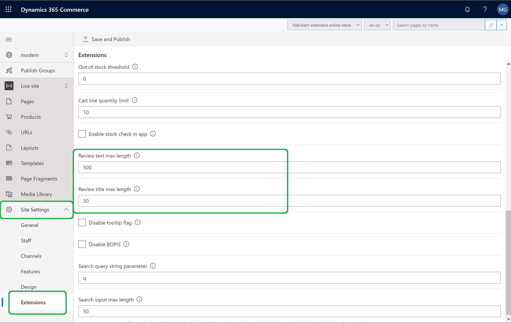
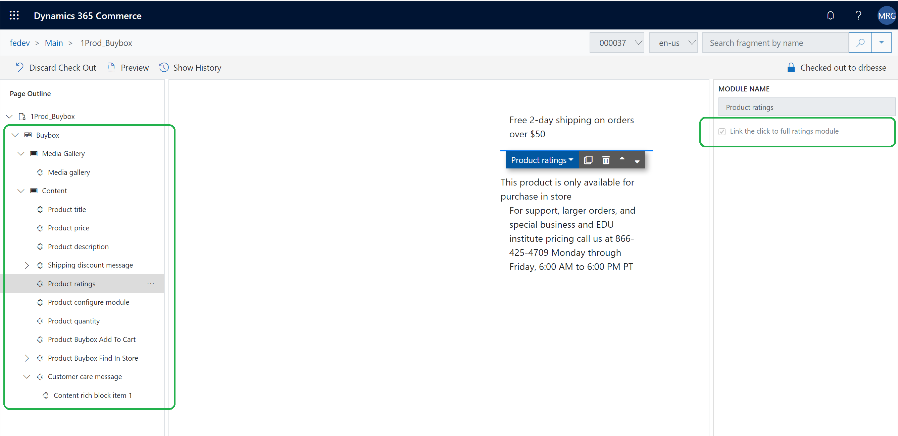
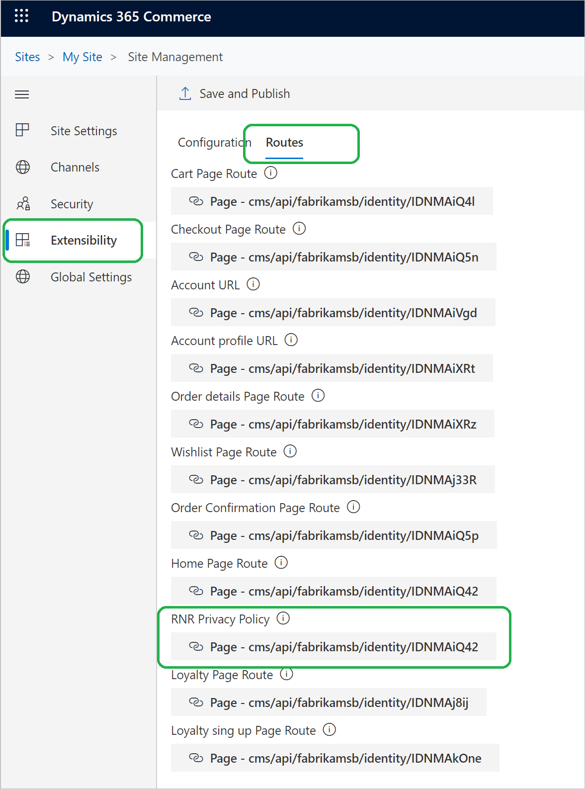

Konfigurieren von Bewertungen und Prüfungen
Important
Dynamics 365 Retail ist jetzt Dynamics 365 Commerce und bietet umfassende Handelsfunktionen für alle Kanäle – von E-Commerce über Shops bis hin zu Callcentern. Weitere Informationen zu diesen Änderungen finden Sie unter Microsoft Dynamics 365 Commerce.
In diesem Thema wird beschrieben, wie Sie Ihre E-Commerce-Webseite konfigurieren, um Beurteilungen und Bewertungen in Microsoft Dynamics 365 Commerce anzuzeigen.
Übersicht
Bewertungen und Rezensionen auf E-Commerce-Websites helfen den Kunden, sich über Produkte zu informieren, bevor sie eine Kaufentscheidung treffen, indem sie ihnen zeigen, was andere Kunden über diese Produkte denken. Für E-Commerce-Websites sind Bewertungen und Prüfungen auch ein Mechanismus für das Zusammenfassen des Kundenfeedbacks zu Produkten.
Konfigurieren einer Site, die Bewertungen und Prüfungen anzeigt
Konfigurationswerte von Beurteilungen und Prüfungen wie die Mandant-Kennung, Prüfung der Textlänge und Prüfung der Titellänge werden auf Sitebene konfiguriert.
Um eine Site zu konfigurieren, damit Bewertungen und Prüfungen angezeigt werden, führen Sie die folgenden Schritte aus.
- Gehen Sie zu Startseite > Sites.
- Wählen Sie den Namen Ihrer Site.
- Gehen Sie zu Site-Einstellungen > Erweiterungen.
- Geben Sie in das Feld Bewertungstext maximale Länge die maximale Anzahl von Zeichen ein, die ein Bewertungstext haben kann (z.B. 1000).
- Geben Sie in das Feld Rezensionstitel maximale Länge die maximale Anzahl von Zeichen ein, die ein Rezensionstitel haben kann (z.B. 55).
- Wählen Sie Speichern und veröffentlichen.
Die folgende Abbildung zeigt, wie diese Kongiguration aussieht in Dynamics 365 Commerce.

Verknüpfen Sie eine Produktbewertung mit dem Bewertungsbereich auf einer PDP
Eine Produktbewertung wird unter dem Produkttitel oben auf der PDP angezeigt. Die Produktbewertung kann so konfiguriert werden, dass diese mit dem Bereich Bewertung der gleichen PDP verknüpft ist.
Wenn Sie eine Produktbewertung mit dem Abschnitt Bewertung des PDP bewerten, führen Sie die folgenden Schritte aus.
- Öffnen Sie die PDP-Vorlage.
- Gehen Sie zu Containerfeld-Moduleinstellungen kaufen.
- Wählen Sie unter Feld kaufen die Option Produktbewertungen und anschließend das Kontrollkästchen Verknüpfen des vollständigen Prüfungsmoduls.
Die folgende Abbildung zeigt, wie diese Kongiguration aussieht in Dynamics 365 Commerce.

Konfigurieren Sie den Link für die Datenschutz- und Richtlinienseite
Um den Link für die Datenschutz- und Richtlinienseite zu konfigurieren, gehen Sie wie folgt vor.
- Gehen Sie zu Startseite > Sites.
- Wählen Sie den Namen Ihrer Site.
- Gehen Sie zu Site-Einstellungen > Erweiterungen.
- Auf der Registerkarte Arbeitspläne unter RNR-Datenschutz und Richtlinie, wählen Sie Fügen Sie einen Link hinzu aus. Wenn bereits ein Link eingegeben wurde und Sie diesen ersetzen möchten, wählen Sie den Link.
- Im Dialogfeld Fügen Sie einen Link hinzu wählen Sie den Link für die Datenschutzrichtlinienseite und wählen Sie OK.
- Wählen Sie Speichern und veröffentlichen.
Die folgende Abbildung zeigt, wie diese Kongiguration aussieht in Dynamics 365 Commerce.

Konfigurieren Sie Bewertungen und Rezensionsmodule auf den Produktdetailseiten
Informationen zur Konfiguration von Bewertungen und Rezensionsmodulen auf den Produktdetailseiten finden Sie unter Bewertungen und Rezensionsmodule.
Zusätzliche Ressourcen
Überblick über Bewertungen und Prüfungen
Verwenden von Bewertungen und Prüfungen abonnieren
Bewertungen und Prüfungen verwalten
Konfigurieren Sie die Bewertungen und Rezensionsmodule auf den Produktdetailseiten
Synchronisieren von Produktbewertungen in Dynamics 365 Retail